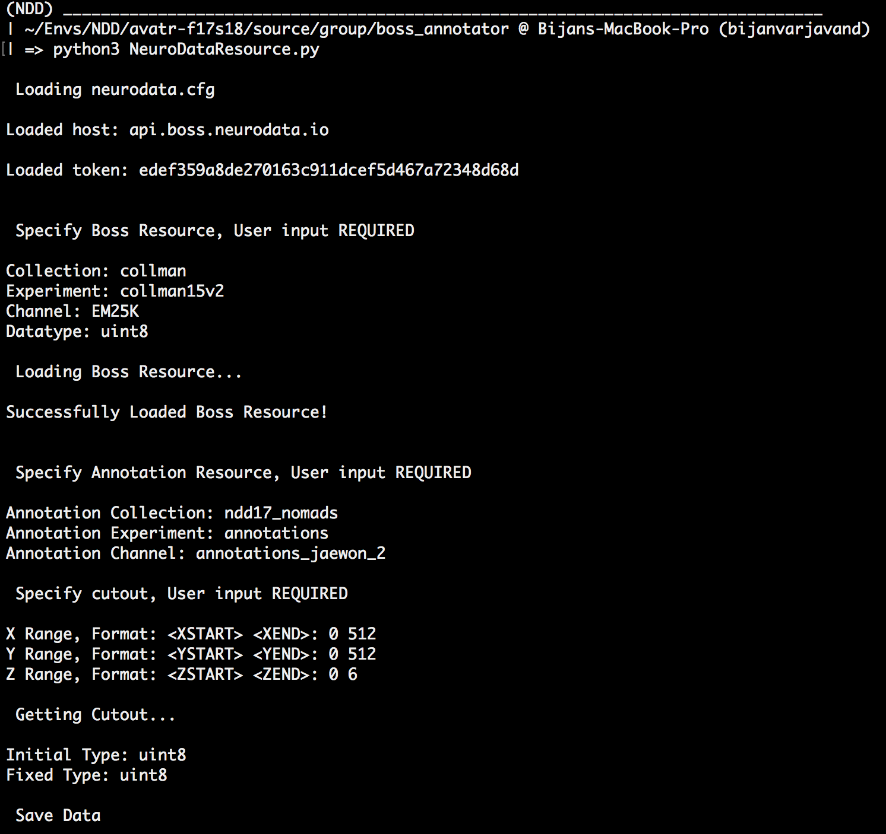
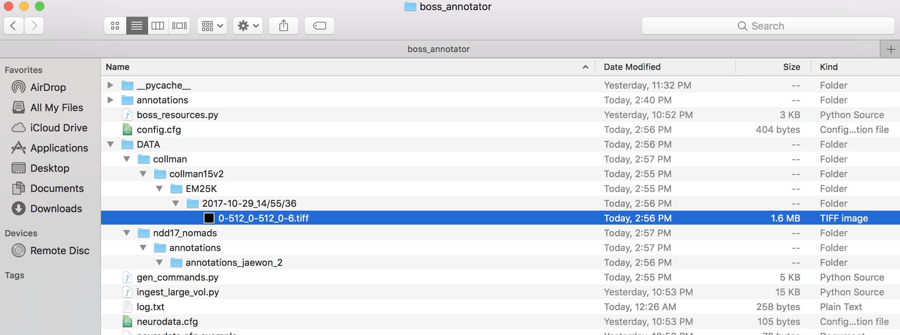
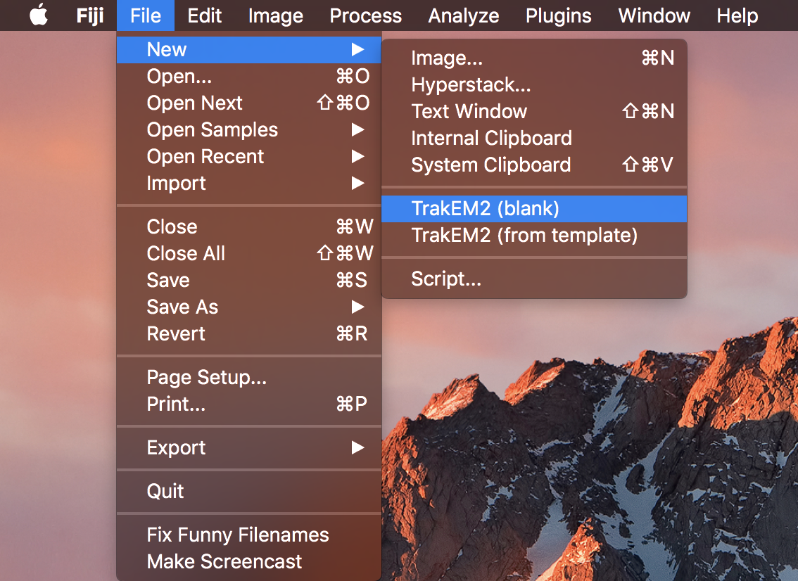
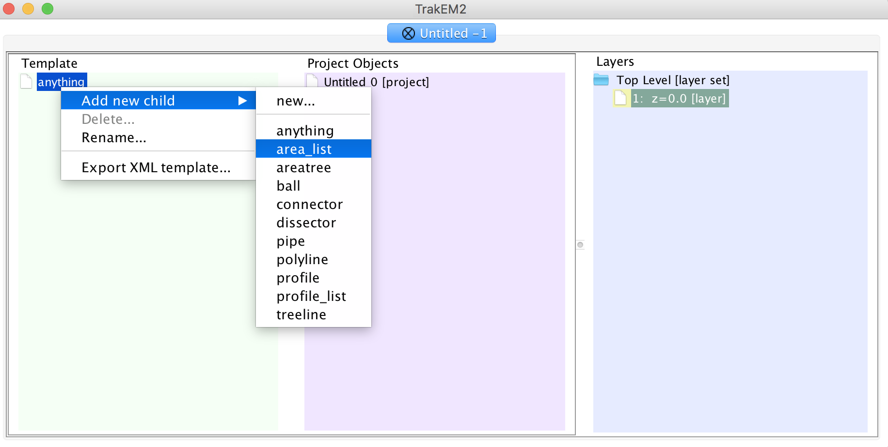
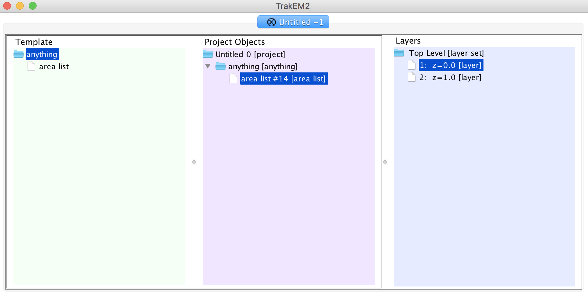
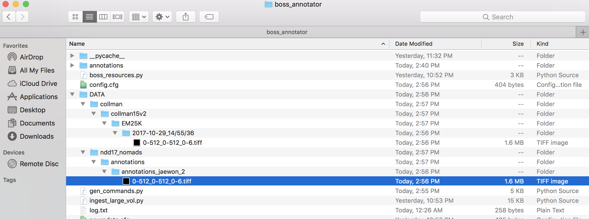

Welcome to NeuroData Annotate’s documentation!¶
- Clone annotation repo. In Terminal type:
git clone https://github.com/rguo123/NeuroData_Annotate.git
- Install dependences by typing:
pip3 install -r requirements.txt - Get BOSS API token by logging in to https://api.boss.neurodata.io/. Note: You need resource manager permissions to upload data to the BOSS.
- Create
neurodata.cfgfile and insert BOSS token as shown below:
[Default] protocol = https host = api.boss.neurodata.io token = INSERT TOKEN HERE
- Pull data from BOSS by typing
python3 NeuroDataResource.pyin terminal and following the input prompt.


- Annotate with FIJI:
- Install onto your system using https://imagej.net/Fiji/Downloads/.
- Open FJII, and start a new blank TrakEM2.

- Navigate to the folder of your image volume and select “open”.
- This should have changed your ImageJ canvas. Now, drag your volume (helloworld.tif) from your folder into the canvas.
- In the popup window, make sure that “Resize canvas to fit stack” is checked. After clicking OK, your canvas should snap to your image.
- In your TrakEM2 properties, right click on “anything” in the template column and add a new “area_list”.

- Drag the entire “anything” folder into “Unitled 0” in the middle column.
- Right click the nested “anything” folder inside “Untitled 0” and add a “new area list”.

- Annotate Your Data by drawing all over it. You can scroll to annotate different slices in your tif.
- When done, right click your canvas and select “Export” -> “Arealists as labels (tif)”.
NOTE: At any point, you can export your annotations as an xml by the same method listed above. Opening the xml file will start you where you left off.
- A black screen will appear - these are your annotations, don’t worry if you can’t see them.
- Save your annotations in the correct directory with the same name, an example given below.

- To push annotations to the BOSS, run
gen_commands.py. - Paste command line output into terminal. If this doesn’t work, you will probably have to change some parameters in
gen_commands.py. Below is a list of all parameters:
Parameters¶
| Parameters | Description | Required | Tips and Examples |
|---|---|---|---|
| script | Path to ingest_large_vol.py script | Yes | Should not have to change. |
| source_type | Where the data is being ingested from | Yes | Either s3 or local. |
| s3_bucket_name | AWS S3 Bucket name | No | Only specify if source_type is s3 |
| aws_profile | AWS Profile | No | Only specify if source_type is s3. AWS Profile Help |
| boss_config_file | Path and filename of BOSS API token | Yes | Should not have to change. |
| slack_token | Slack API token | No | Use if you want slack notifiction once ingest is finished. |
| slack_username | Slack username | No | Use if you want slack notification once ingest is finished. |
| collection | BOSS collection name | Yes | You need permission for existing BOSS collections. Specifying a collection not in the BOSS will create a new collection (again, need permissions). |
| experiment | BOSS experiment name | Yes | See collection input. |
| channel | BOSS channel name | Yes | See collection input. |
| data_directory | Directory data is stored in | Yes | Format: Path/To/Data/ |
| file_name | Filename of data without file extension | Yes | Can specify which z slices you want for tif files. Example: TODO. |
| file_format | Extension of data file | Yes | Example: tif, png. |
| z_step | Increment of filename numbering | Yes | Typically keep at 1. |
| voxel_size | Physical dimensions of each voxel | Yes | Typically keep at 1 1 1. This just determines some BOSS metadata mostly. |
| voxel_unit | Physical unit for voxel size | Yes | Options: nanometers, micrometers, millimeters, centimeters. |
| data_type | Data type of image | Yes | uint8 or uint16 for data, uint64 for annotations. Bug: Have to specify in ingest_large_vol.py the datatype as well. |
| data_dimensions | X, Y, Z, dimensions of data | Yes | Format: X Y Z (e.g. 1280 720 5). |
| z_range | List of z slices to ingest | Yes | First inclusive, last exclusive (e.g. [0, 5]). |
| workers | Number of workers to use | Yes | Potential memory errors. |
Dockered Approach!¶
- Install Docker by following instructions here: Docker Installation
2. In terminal, type the following command:
docker pull rguo123/nddannotate
3. Start NeuroData_Annotate Container by typing in terminal
docker run -it rguo123/annotate.
- You should now be in the docker container’s bash shell.
- Use the above instructions to pull data with NeuroData Resource.
6. To copy data out of the container, use the following command:
docker cp CONTAINER:SRC_Path DEST_Path.
Use this to copy your BOSS data onto your computer.
- Annotate the data following the Fiji instructions above.
8. Copy annotations back into docker container when you are ready with the command
docker cp SOURCE_PATH CONTAINER:Dest_Path
9. Reenter your container with the command
docker exec -it container_id /bin/bash"
- Run ingest_large_vol commands to successfully push your data to the BOSS.